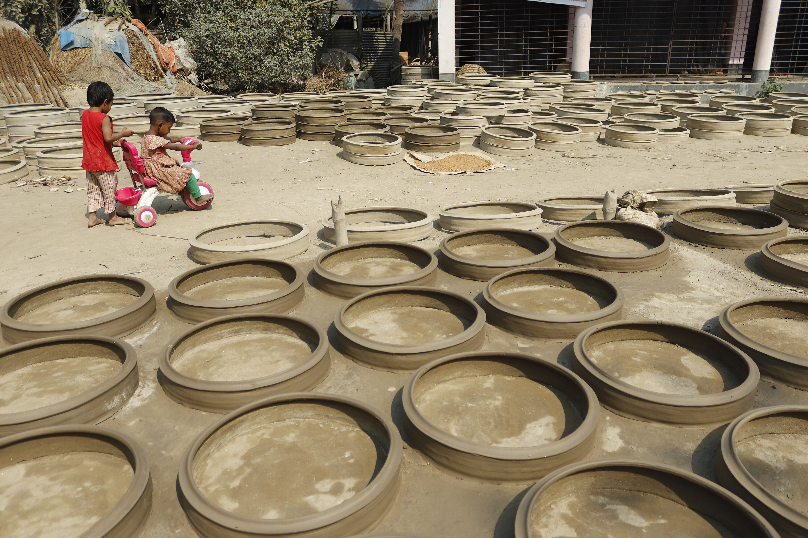
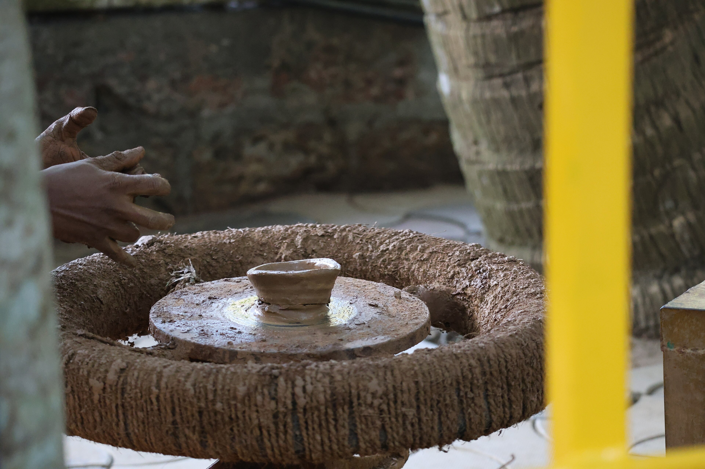
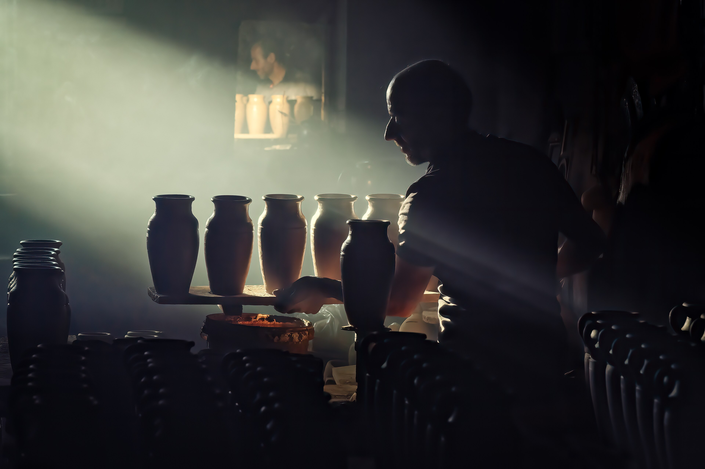
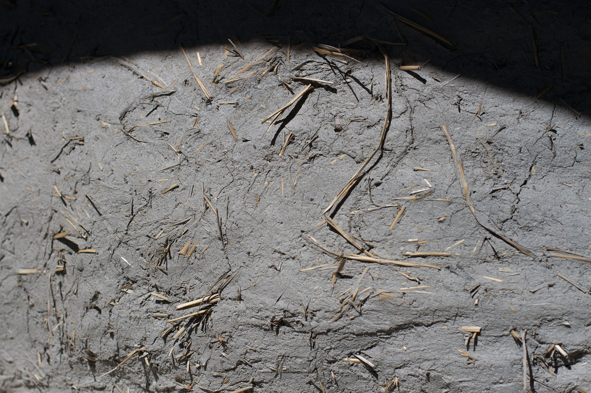
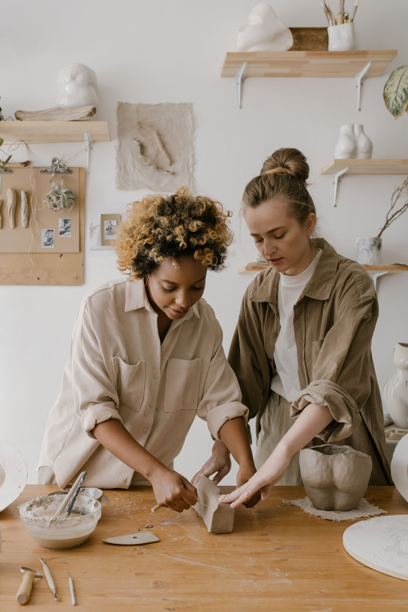
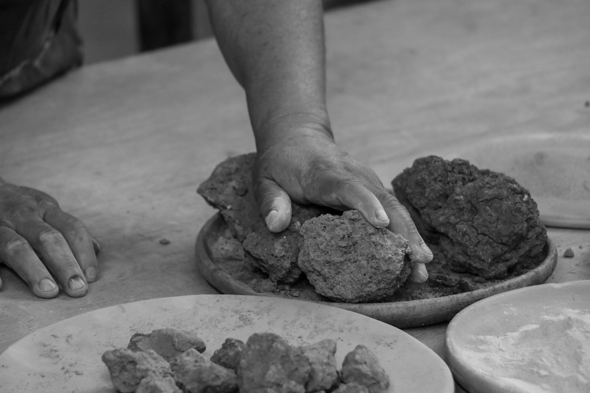
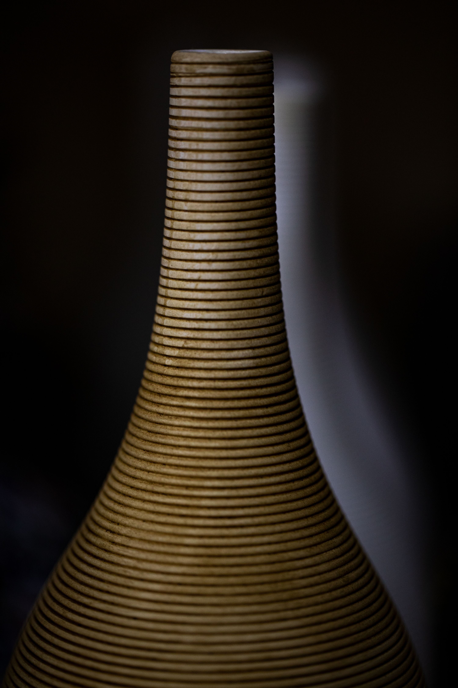
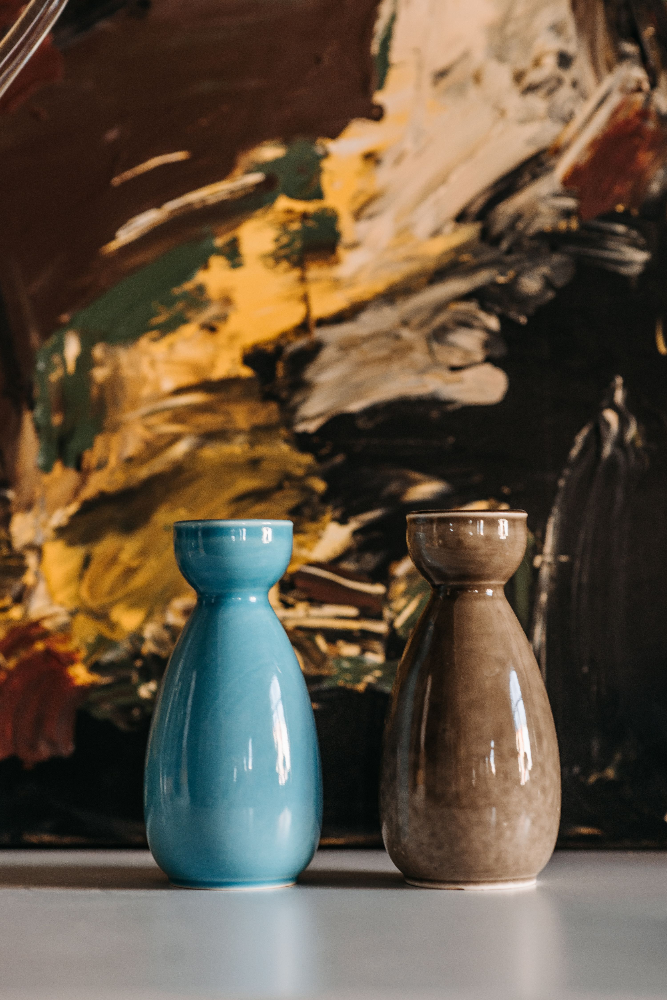

Make participation and beginner access visible; avoid a product-catalogue reading.

Original synthetic production asset. This fictional client and venue do not represent a real organisation.
The person behind the brief
Jonah, studio coordinator
Saltwind began as a two-person pottery studio. Visitors admire the finished vessels but often assume everything is for sale. Its new introductory session invites people to shape a small clay object themselves. Jonah wants to attract beginners who may think they are “not artistic”.
The audience
Local beginners aged 16 and up who are curious about making but have never visited a ceramics studio.
Approved factual copy
- Your first clay workshop
- Saturday · 1–3 pm
- Saltwind Pottery · 8 Studio Row
- Beginners welcome. Materials included.
- Book a place at the studio desk.
You may write your own headline and reorder this information. Retain the facts and practical instructions. Dates are fictional weekday descriptions; no real scheduled event is implied.
Boundary: Do not promise a finished fired vessel on the day, describe the course as free, or label an unrelated source pot as made by this fictional studio.
Your creative territory
You may communicate through process, texture, a surprising object relationship, expressive type or original drawing. The brief does not require a picture of hands.
The logo identifies the client. Keep its proportions and readable space around it; do not use a photograph as the client's trademark. Palette roles and title fonts below are starting directions. You may propose a purposeful alternative palette or type system and defend it at the planning conference. No layout is prescribed.
Production scope: 2550 × 3300 px RGB print study and 1080 × 1350 px RGB screen adaptation. Keep separate layered PSDs or genuinely editable artboards. Export PNGs. The school printer/profile must be checked before a press-ready claim.
Download this complete kitBrand ingredients
Colour SVG · Dark SVG · Light SVG · Transparent PNG
Clay#B76448
dominant/accent Type candidates: Georgia: title candidate; Arial: details. Use school-installed fonts; no installation is required. If a candidate is unavailable, use an available serif/sans-serif equivalent and record the substitution.
ACO swatches · ASE palette · CSS values · Colour-role record
Files have deterministic colour values; Photoshop import/manual-add and artboard captures are awaiting the native run. See the software lab. Palette harmony alone does not guarantee readable text.
Choose your raw materials
Complete source and licence links
Compare making-in-progress with a finished vessel. Decide which image needs contextual copy to avoid a shop interpretation. Use only what earns a role in your concept. You may combine, crop or adapt permitted assets and add your own credited work. The photographs show their source settings, not this fictional business. Do not imply endorsement. For CC BY-SA source derivatives, retain the source's share-alike licence and credit in the delivered work; keep other assets' rights identifiable.
Saltwind Pottery original teaching scene
1536 × 1024 · OpenAI image generation, art-directed for Chad
Original AI-assisted classroom production asset · source · synthetic
The traditional pottery of Bangladesh 368.jpg
3840 × 2560 · Frameofashik
CC BY-SA 4.0 · source
Potter shaping clay on a traditional manual potter’s wheel in India 01.jpg
3840 × 2560 · Gannu03
CC BY-SA 4.0 · source
The Potter of Cappadocia.jpg
3840 × 2560 · Mericaktar
CC BY-SA 4.0 · source
Clay Walled Oven Texture (8863463879).jpg
3840 × 2560 · cogdogblog
CC BY 2.0 · source
Women Working With Clay
3000 × 4500 · cottonbro studio
Pexels License · source
Black And White Image Of Hands With Clay
3000 × 2000 · Anya Juárez Tenorio
Pexels License · source
A Close Up Shot Of A Ceramic Vase
3000 × 4500 · Ahmad Jumaa Khamis
Pexels License · source
Ceramic Vases On The Table
3000 × 4494 · Pavel Danilyuk
Pexels License · source